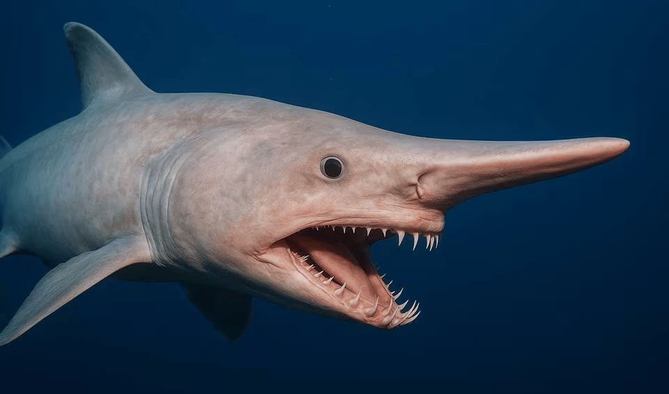

-
Megladon
I like this type the most because of how big they were.
-
Great White
Again, this one is a close second because of how big they are.
-
Whale
I like these because they don’t necessarily look like a shark.
-
Hammerhead
I like the way their head is, it’s very interesting to me.
-
Tiger
This one is here because I like how they eat almost anything in the ocean, they aren’t picky eaters.
-
Basking
I love the way these look.
-
Lemon
I really just like the name of these.
-
Goblin
These are really interesting looking and I love that, very scary.

-
Zebra
I like that these are fairly small.
-
Bull
I put these on the list because they can live in both saltwater and fresh water and that is both interesting and scary to me.